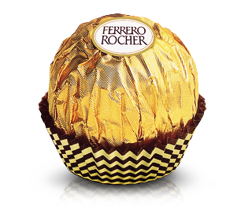
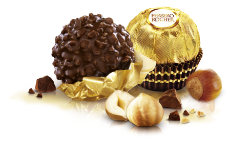

Ferrero Rocher oferece uma experiência de sabor incomparável de contraste de camadas: uma avelã inteira no meio, um delicioso recheio cremoso de avelã, um wafer crocante coberto com chocolate e pedacinhos de avelã.
